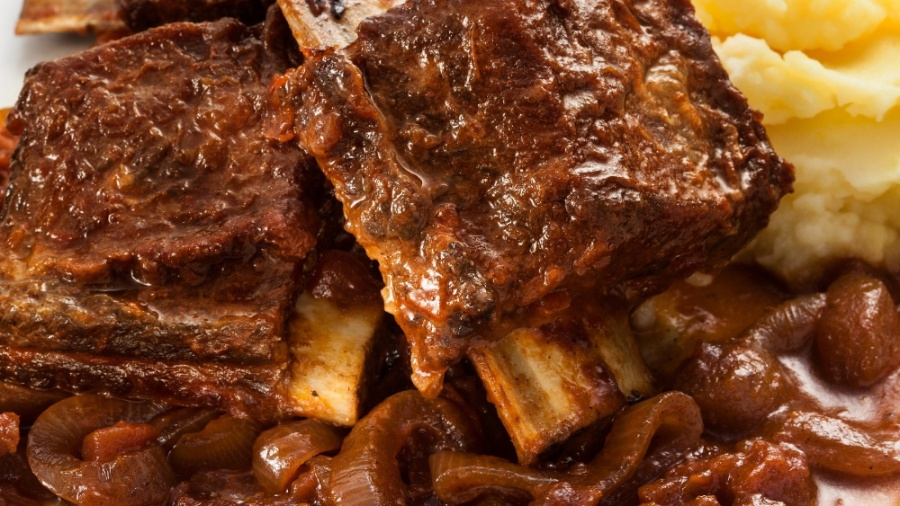

Costela ao molho more_vert
format_list_bulleted Acesse a receita
Costelaclose 1 kg de
costela de boi 2 dentes de alho amassado 2 colher de sopa de óleo 1 cebola cortada em rodelas 1 tablete de caldo
de carne sal a gosto

Linguiça Frita more_vert
format_list_bulleted Acesse a receita
Linguiça Fritaclose
Corte a lingüiça em rodelas finas.
Coloque em água suficiente para cobrir a lingüiça e leve ao fogo, quando começar a ferver escorra a água.
Coloque em uma frigideira o azeite e a cebola, acrescente a lingüiça e frite.
Coloque o orégano e sirva em seguida.